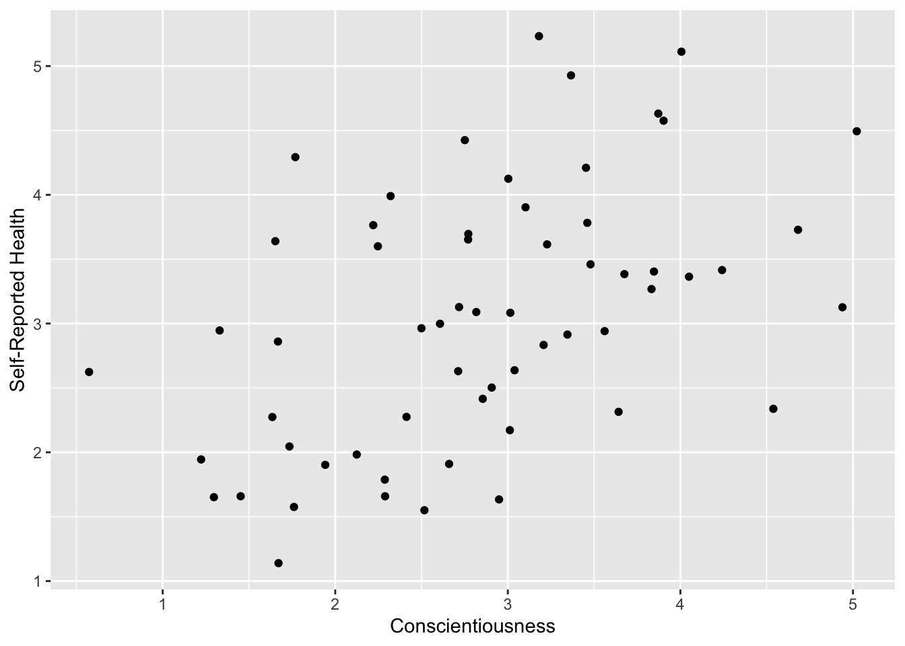

library(tidyverse)
library(psych) #for correlation analysis
library(papaja) #for formatting p values
library(broom) #for formatting tables
library(knitr) #for formatting tablesModule 3: Lab Starter File KEY
Load Packages
Note: you may have to install these packages first.
Part 1: Correlation
Read in the Data
First, let’s read in the data and then use View() to check it out.
The data file is called consc_health.csv. Please name the data “health”.
#pause for students to attempt
health <- read_csv("data/consc_health.csv")Rows: 60 Columns: 4
── Column specification ────────────────────────────────────────────────────────
Delimiter: ","
chr (1): gender
dbl (3): pid, consc, sr_health
ℹ Use `spec()` to retrieve the full column specification for this data.
ℹ Specify the column types or set `show_col_types = FALSE` to quiet this message.View(health)Scatter plot
Scatter plots allow us to visualize the relationship between two variables. Let’s create a scatter plot of the relation between conscientiousness and self-reported health using ggplot().
#pause for students to fill in ??
ggplot(data = health, aes(x=consc, y=sr_health)) +
geom_point() +
labs(x = "Conscientiousness", y = "Self-Reported Health") #label your axes!
Question: What do you notice about the strength and direction of the data?
Calculate correlation coefficient (r)
Now, let’s calculate the correlation coefficient for health$consc and health$sr_health using the cor() function (this is in the {stats} package, which is a core package in to R - no need to install/load!).
#pause for students to fill in ??
cor(health$consc, health$sr_health)[1] 0.4765366Question: Is the correlation positive or negative? …strong or weak?
Correlation test
You can run a correlation test using the corr.test() function from the {psych} package.
r_consc_health <- health %>%
select(consc, sr_health) %>%
corr.test()Question: What can we conclude about the relationship between conscientiousness and health from this data?
It is often very useful to save the output of a statistical test to an object that you can then pull useful information out of it.
str(r_consc_health)List of 14
$ r : num [1:2, 1:2] 1 0.477 0.477 1
..- attr(*, "dimnames")=List of 2
.. ..$ : chr [1:2] "consc" "sr_health"
.. ..$ : chr [1:2] "consc" "sr_health"
$ n : num 60
$ t : num [1:2, 1:2] Inf 4.13 4.13 Inf
..- attr(*, "dimnames")=List of 2
.. ..$ : chr [1:2] "consc" "sr_health"
.. ..$ : chr [1:2] "consc" "sr_health"
$ p : num [1:2, 1:2] 0 0.000119 0.000119 0
..- attr(*, "dimnames")=List of 2
.. ..$ : chr [1:2] "consc" "sr_health"
.. ..$ : chr [1:2] "consc" "sr_health"
$ p.adj : num 0.000119
$ se : num [1:2, 1:2] 0 0.115 0.115 0
..- attr(*, "dimnames")=List of 2
.. ..$ : chr [1:2] "consc" "sr_health"
.. ..$ : chr [1:2] "consc" "sr_health"
$ sef : num 0.132
$ adjust: chr "holm"
$ sym : logi TRUE
$ ci :'data.frame': 1 obs. of 4 variables:
..$ lower: num 0.253
..$ r : num 0.477
..$ upper: num 0.652
..$ p : num 0.000119
$ ci2 :'data.frame': 1 obs. of 5 variables:
..$ lower: num 0.253
..$ r : num 0.477
..$ upper: num 0.652
..$ p : num 0.000119
..$ p.adj: num 0.000119
$ ci.adj:'data.frame': 1 obs. of 2 variables:
..$ lower.adj: num 0.253
..$ upper.adj: num 0.652
$ stars : chr [1:2, 1:2] "1***" "0.48***" "0.48***" "1***"
..- attr(*, "dimnames")=List of 2
.. ..$ : chr [1:2] "consc" "sr_health"
.. ..$ : chr [1:2] "consc" "sr_health"
$ Call : language corr.test(x = .)
- attr(*, "class")= chr [1:2] "psych" "corr.test"r_consc_health$p #p-value matrix consc sr_health
consc 0.0000000000 0.0001186082
sr_health 0.0001186082 0.0000000000r_consc_health$p.adj #p-value (adjusted for multiple comparisons, which isn't applicable here)[1] 0.0001186082#pause for students to fill in ??
r_consc_health$ci #confidence interval lower r upper p
consc-sr_hl 0.2532571 0.4765366 0.6516132 0.0001186082r_consc_health$n #sample size[1] 60Summary
#pause for students to fill in A [WHAT GOES HERE]
A significant positive correlation was found between conscientiousness and self-reported health status, r(58) = 0.48, 95% CI[0.25, 0.65], p < .001.
Part 2: Regression
Let’s add a regression line to the plot we created earlier. You can add a line of best fit by adding a geom_smooth() layer to the plot.
ggplot(data = health, aes(x=consc, y=sr_health)) +
geom_point() +
geom_smooth(method = "lm") +
labs(x = "Conscientiousness", y = "Self-Reported Health") #label your axes!`geom_smooth()` using formula = 'y ~ x'Example: model <- lm(y ~ x, data = df)
Let’s perform a linear regression analysis.
- Regress self-report health scores on conscientiousness using the
lm()function below. - Store the results of
lm()in an object calledmodel. - If you’re not sure how to do this, look at the example above!
#pause for students to create model
model <- lm(health$sr_health ~ health$consc)
model <- lm(sr_health ~ consc, data = health)Let’s see what the output looks like (print by typing model).
model
Call:
lm(formula = sr_health ~ consc, data = health)
Coefficients:
(Intercept) consc
1.6570 0.4904 We can get even more information using summary().
#pause for students to fill in ??
summary(model)
Call:
lm(formula = sr_health ~ consc, data = health)
Residuals:
Min 1Q Median 3Q Max
-1.5450 -0.6414 -0.1623 0.6817 2.0154
Coefficients:
Estimate Std. Error t value Pr(>|t|)
(Intercept) 1.6570 0.3571 4.641 2.03e-05 ***
consc 0.4904 0.1188 4.128 0.000119 ***
---
Signif. codes: 0 '***' 0.001 '**' 0.01 '*' 0.05 '.' 0.1 ' ' 1
Residual standard error: 0.8854 on 58 degrees of freedom
Multiple R-squared: 0.2271, Adjusted R-squared: 0.2138
F-statistic: 17.04 on 1 and 58 DF, p-value: 0.0001186Residual standard error
Let’s calculate the residual standard error from scratch, and then I will show you how to pull this value directly from the output.
First, we need to get the predicted values of Y.
Our regression model object, called model, is actually a list that contains a lot of useful information that we don’t see in the output above. Let’s take a look at all the information stored in this object using the str() function:
str(model)List of 12
$ coefficients : Named num [1:2] 1.66 0.49
..- attr(*, "names")= chr [1:2] "(Intercept)" "consc"
$ residuals : Named num [1:60] -1.052 0.374 -0.14 -0.462 0.86 ...
..- attr(*, "names")= chr [1:60] "1" "2" "3" "4" ...
$ effects : Named num [1:60] -23.6511 -3.655 -0.0716 -0.2861 0.9479 ...
..- attr(*, "names")= chr [1:60] "(Intercept)" "consc" "" "" ...
$ rank : int 2
$ fitted.values: Named num [1:60] 2.96 4.12 3.54 2.51 3.35 ...
..- attr(*, "names")= chr [1:60] "1" "2" "3" "4" ...
$ assign : int [1:2] 0 1
$ qr :List of 5
..$ qr : num [1:60, 1:2] -7.746 0.129 0.129 0.129 0.129 ...
.. ..- attr(*, "dimnames")=List of 2
.. .. ..$ : chr [1:60] "1" "2" "3" "4" ...
.. .. ..$ : chr [1:2] "(Intercept)" "consc"
.. ..- attr(*, "assign")= int [1:2] 0 1
..$ qraux: num [1:2] 1.13 1.29
..$ pivot: int [1:2] 1 2
..$ tol : num 1e-07
..$ rank : int 2
..- attr(*, "class")= chr "qr"
$ df.residual : int 58
$ xlevels : Named list()
$ call : language lm(formula = sr_health ~ consc, data = health)
$ terms :Classes 'terms', 'formula' language sr_health ~ consc
.. ..- attr(*, "variables")= language list(sr_health, consc)
.. ..- attr(*, "factors")= int [1:2, 1] 0 1
.. .. ..- attr(*, "dimnames")=List of 2
.. .. .. ..$ : chr [1:2] "sr_health" "consc"
.. .. .. ..$ : chr "consc"
.. ..- attr(*, "term.labels")= chr "consc"
.. ..- attr(*, "order")= int 1
.. ..- attr(*, "intercept")= int 1
.. ..- attr(*, "response")= int 1
.. ..- attr(*, ".Environment")=<environment: R_GlobalEnv>
.. ..- attr(*, "predvars")= language list(sr_health, consc)
.. ..- attr(*, "dataClasses")= Named chr [1:2] "numeric" "numeric"
.. .. ..- attr(*, "names")= chr [1:2] "sr_health" "consc"
$ model :'data.frame': 60 obs. of 2 variables:
..$ sr_health: num [1:60] 1.91 4.49 3.4 2.05 4.21 ...
..$ consc : num [1:60] 2.66 5.02 3.85 1.73 3.45 ...
..- attr(*, "terms")=Classes 'terms', 'formula' language sr_health ~ consc
.. .. ..- attr(*, "variables")= language list(sr_health, consc)
.. .. ..- attr(*, "factors")= int [1:2, 1] 0 1
.. .. .. ..- attr(*, "dimnames")=List of 2
.. .. .. .. ..$ : chr [1:2] "sr_health" "consc"
.. .. .. .. ..$ : chr "consc"
.. .. ..- attr(*, "term.labels")= chr "consc"
.. .. ..- attr(*, "order")= int 1
.. .. ..- attr(*, "intercept")= int 1
.. .. ..- attr(*, "response")= int 1
.. .. ..- attr(*, ".Environment")=<environment: R_GlobalEnv>
.. .. ..- attr(*, "predvars")= language list(sr_health, consc)
.. .. ..- attr(*, "dataClasses")= Named chr [1:2] "numeric" "numeric"
.. .. .. ..- attr(*, "names")= chr [1:2] "sr_health" "consc"
- attr(*, "class")= chr "lm"We can extract elements from this list by using LIST$ELEMENT or LIST[["ELEMENT"]].
Extracting predicted Y values
The fitted values of Y are stored in model in an element called fitted.values. Using the instructions about how to extract elements from lists right above, extract the fitted values from the model and store these in an object called fitted_y. Print fitted_y.
#pause for students to fill in ??
fitted_y <- model$fitted.values
fitted_y 1 2 3 4 5 6 7 8
2.961300 4.119826 3.543509 2.507581 3.350326 3.621532 3.038562 3.570843
9 10 11 12 13 14 15 16
3.178485 3.147345 2.758911 3.403290 2.987058 3.015841 3.216697 3.135321
17 18 19 20 21 22 23 24
3.056917 3.006047 3.015321 3.297619 2.458993 2.840238 3.082434 2.292952
25 26 27 28 29 30 31 32
3.103269 3.133964 2.989617 3.354057 2.882657 3.952820 2.891139 3.307783
33 34 35 36 37 38 39 40
2.745710 3.555768 3.643154 2.474954 2.778601 2.520440 2.935472 2.524356
41 42 43 44 45 46 47 48
2.467469 3.442900 4.079152 2.368996 3.882772 2.256636 3.239823 2.609330
49 50 51 52 53 54 55 56
2.309207 3.229900 2.795072 2.476516 3.459384 3.363102 3.536529 1.938202
57 58 59 60
2.698847 3.737070 3.129544 2.779391 Next, calculate the difference between the actual values of Y and the fitted values of Y. Store the output in an object called residuals and print them.
#pause for students to fill in ??
residuals <- health$sr_health - fitted_y
residuals 1 2 3 4 5 6
-1.05179179 0.37371307 -0.13961566 -0.46222179 0.85971248 1.49034005
7 8 9 10 11 12
0.05099371 1.00473746 0.72444971 -0.51013035 0.84130202 -0.46213405
13 14 15 16 17 18
-0.35681873 0.68032922 2.01542826 -0.05149984 -0.64163120 1.41852518
19 20 21 22 23 24
0.63739066 -0.38306263 -0.18498050 -0.56514672 -0.57972677 -0.64136398
25 26 27 28 29 30
-1.46937901 -0.96204444 0.13844794 0.42834928 0.08103582 -0.22450409
31 32 33 34 35 36
-1.34106226 1.61985264 1.01873328 1.07527601 -0.27924189 0.38539640
37 38 39 40 41 42
-0.99089855 -0.94483134 0.06312578 1.76842089 1.17242288 -1.12845379
43 44 45 46 47 48
-0.95248954 -0.71015044 -1.54500530 -0.31210445 0.37530444 -0.70690430
49 50 51 52 53 54
0.63716375 -0.39605196 1.19505547 -1.33741467 -0.07534450 0.09696171
55 56 57 58 59 60
-0.26867918 0.68566564 -0.71606326 -0.32167592 0.99511089 -1.12082173 Extracting residuals
OK, so I made you do extra work. You can actually grab the residuals directly from the model object using model$residuals.
model$residuals 1 2 3 4 5 6
-1.05179179 0.37371307 -0.13961566 -0.46222179 0.85971248 1.49034005
7 8 9 10 11 12
0.05099371 1.00473746 0.72444971 -0.51013035 0.84130202 -0.46213405
13 14 15 16 17 18
-0.35681873 0.68032922 2.01542826 -0.05149984 -0.64163120 1.41852518
19 20 21 22 23 24
0.63739066 -0.38306263 -0.18498050 -0.56514672 -0.57972677 -0.64136398
25 26 27 28 29 30
-1.46937901 -0.96204444 0.13844794 0.42834928 0.08103582 -0.22450409
31 32 33 34 35 36
-1.34106226 1.61985264 1.01873328 1.07527601 -0.27924189 0.38539640
37 38 39 40 41 42
-0.99089855 -0.94483134 0.06312578 1.76842089 1.17242288 -1.12845379
43 44 45 46 47 48
-0.95248954 -0.71015044 -1.54500530 -0.31210445 0.37530444 -0.70690430
49 50 51 52 53 54
0.63716375 -0.39605196 1.19505547 -1.33741467 -0.07534450 0.09696171
55 56 57 58 59 60
-0.26867918 0.68566564 -0.71606326 -0.32167592 0.99511089 -1.12082173 Let’s check to see that our calculation of the residuals matches what we grabbed directly from the model output.
round(residuals, 10) == round(resid(model), 10) 1 2 3 4 5 6 7 8 9 10 11 12 13 14 15 16
TRUE TRUE TRUE TRUE TRUE TRUE TRUE TRUE TRUE TRUE TRUE TRUE TRUE TRUE TRUE TRUE
17 18 19 20 21 22 23 24 25 26 27 28 29 30 31 32
TRUE TRUE TRUE TRUE TRUE TRUE TRUE TRUE TRUE TRUE TRUE TRUE TRUE TRUE TRUE TRUE
33 34 35 36 37 38 39 40 41 42 43 44 45 46 47 48
TRUE TRUE TRUE TRUE TRUE TRUE TRUE TRUE TRUE TRUE TRUE TRUE TRUE TRUE TRUE TRUE
49 50 51 52 53 54 55 56 57 58 59 60
TRUE TRUE TRUE TRUE TRUE TRUE TRUE TRUE TRUE TRUE TRUE TRUE Sum of squared residuals
Calculate the sum of squared residuals and store the output in an object called sum_sq_residuals.
#pause for students to fill in ??
sum_sq_residuals <- sum(residuals^2)
sum_sq_residuals[1] 45.46788Finally, now that we have pulled the necessary components, calculate the residual standard error using the formula above. Store the results of the calculation to an object called residual_standard_error.
residual_standard_error <- sqrt(sum_sq_residuals / (nrow(health) - 2))
residual_standard_error[1] 0.8853976Extracting residual standard error
We can also get the standard error more directly. However, it is not stored in the model object that we stored the output of the lm() function to. It is stored in the output of the summary() function. Let’s assign the output of this function to an object called model_summary, and then inspect its structure:
model_summary <- summary(model)
str(model_summary)List of 11
$ call : language lm(formula = sr_health ~ consc, data = health)
$ terms :Classes 'terms', 'formula' language sr_health ~ consc
.. ..- attr(*, "variables")= language list(sr_health, consc)
.. ..- attr(*, "factors")= int [1:2, 1] 0 1
.. .. ..- attr(*, "dimnames")=List of 2
.. .. .. ..$ : chr [1:2] "sr_health" "consc"
.. .. .. ..$ : chr "consc"
.. ..- attr(*, "term.labels")= chr "consc"
.. ..- attr(*, "order")= int 1
.. ..- attr(*, "intercept")= int 1
.. ..- attr(*, "response")= int 1
.. ..- attr(*, ".Environment")=<environment: R_GlobalEnv>
.. ..- attr(*, "predvars")= language list(sr_health, consc)
.. ..- attr(*, "dataClasses")= Named chr [1:2] "numeric" "numeric"
.. .. ..- attr(*, "names")= chr [1:2] "sr_health" "consc"
$ residuals : Named num [1:60] -1.052 0.374 -0.14 -0.462 0.86 ...
..- attr(*, "names")= chr [1:60] "1" "2" "3" "4" ...
$ coefficients : num [1:2, 1:4] 1.657 0.49 0.357 0.119 4.641 ...
..- attr(*, "dimnames")=List of 2
.. ..$ : chr [1:2] "(Intercept)" "consc"
.. ..$ : chr [1:4] "Estimate" "Std. Error" "t value" "Pr(>|t|)"
$ aliased : Named logi [1:2] FALSE FALSE
..- attr(*, "names")= chr [1:2] "(Intercept)" "consc"
$ sigma : num 0.885
$ df : int [1:3] 2 58 2
$ r.squared : num 0.227
$ adj.r.squared: num 0.214
$ fstatistic : Named num [1:3] 17 1 58
..- attr(*, "names")= chr [1:3] "value" "numdf" "dendf"
$ cov.unscaled : num [1:2, 1:2] 0.1626 -0.0513 -0.0513 0.018
..- attr(*, "dimnames")=List of 2
.. ..$ : chr [1:2] "(Intercept)" "consc"
.. ..$ : chr [1:2] "(Intercept)" "consc"
- attr(*, "class")= chr "summary.lm"Can you find what the residual standard error is called? Once you find it, extract it from the model_summary.
#pause for students to fill in ??
model_summary$sigma [1] 0.8853976Is it equivalent to what we calculated above?
#pause for students to fill in ??
model_summary$sigma == residual_standard_error[1] TRUEQuestion: What does this residual standard error (AKA standard error of the estimate) mean?
The coefficient of determination (\(R^2\))
Calculating \(R^2\) ‘by hand’
Another measure of how well our linear model is capturing variation in the outcome variable is \(R^2\).
Let’s calculate \(R^2\) by hand first. Here is the formula:
\[R^2 = \frac{SS_{Model}}{SS_{Total}} = \frac{\Sigma(\hat{Y_i} - \bar{Y})^2}{\Sigma(Y_i - \bar{Y})^2}\]
Calculate the following:
\(SS_{Model}\)
\(SS_{Total}\)
\(R^2\)
#pause for students to fill in ?? using equations above
ss_model <- sum((fitted_y - mean(health$sr_health))^2)
ss_model[1] 13.35878ss_total <- sum((health$sr_health - mean(health$sr_health))^2)
ss_total[1] 58.82665r_squared <- ss_model / ss_total
r_squared[1] 0.2270871Extracting \(R^2\)
The coefficient of determination is also stored in the element called r.squared. This represents the proportion of variance explained by the model. Like the residual standard error, we need to use the summary function to get it:
model_summary$r.squared[1] 0.2270871Is it equivalent to what we calculated above?
r_squared == model_summary$r.squared[1] FALSEround(r_squared, 10) == round(model_summary$r.squared, 10)[1] TRUEQuestion: What does this r-squared value mean (in plain English)?
Regression coefficients
We also get estimates for the individual regression coefficients, \(b_0\) and \(b_1\) in the case of univariate regression.
Calculating regression coefficients ‘by hand’
We can calculate these from scratch using the following formulas.
For obtaining \(b_1\):
\[b_1 = r(\frac{s_y}{s_x})\]
Calculate \(b_1\) using the equation above. Store the value in an object called b1.
r <- cor(health$sr_health, health$consc)
s_y <- sd(health$sr_health)
s_x <- sd(health$consc)
b1 <- r * (s_y / s_x)And for obtaining \(b_0\):
\[b_0 = M_y - b_1M_x\]
Calculate \(b_0\) using the equation above. Store the value in an object called b0.
b0 <- mean(health$sr_health) - (b1 * (mean(health$consc)))Extracting regression coefficients
We can also grab these estimates from the model output using model$coefficients or the coef() function.
#pause for students to attempt
model$coefficients(Intercept) consc
1.6569733 0.4904059 Question: What does the intercept mean?
Question: What about the slope for conscientiousness?
We can get the confidence intervals around those coefficients by using the confint function from the {stats} package. Save the confidence interval in an object called model_ci
#pause for students to attempt
model_ci <- confint(model)Getting standardized coefficients
These are called the unstandardized coefficients. We can also get the standardized coefficients. Standardized regression coefficients, often notated as \(\beta\), are just the regression coefficients after the variables have been standardized or Z-scored. To obtain them, we need to z-score our data with scale() before we run the lm() function. One really cool thing is that we can do it in the lm() call:
std_model <- lm(scale(sr_health) ~ scale(consc), data = health)
coefficients(std_model) %>%
round(3) (Intercept) scale(consc)
0.000 0.477 Question: What does the standardized slope for conscientiousness mean?
Question: Why is the intercept zero?
Getting the p-values
We can also test the significance of each of the regression coefficient estimates.
We can get these from the summary of our model object by extracting the coefficients from the summary.
summary(model)$coefficients Estimate Std. Error t value Pr(>|t|)
(Intercept) 1.6569733 0.3570543 4.640676 0.0000202958
consc 0.4904059 0.1187984 4.128050 0.0001186082As an aside, let’s take a look at the correlation value that we calculated earlier. What do you notice?
r_consc_healthCall:corr.test(x = .)
Correlation matrix
consc sr_health
consc 1.00 0.48
sr_health 0.48 1.00
Sample Size
[1] 60
Probability values (Entries above the diagonal are adjusted for multiple tests.)
consc sr_health
consc 0 0
sr_health 0 0
To see confidence intervals of the correlations, print with the short=FALSE optionQuestion: Is the test of the intercept significant? What does this mean?
Question: Is the test of the slope significant? What does this mean?
A tidier way to extract information
You may have noticed at this point that working with lists has its challenges. Even just extracting the information we’ve extracted so far has some pretty messy code. There must be a better (tidier) way!
Thankfully, there is. The {broom} package is a package for tidying the results of models. It’s pretty easy to use—you just pass the model object to a function from {broom} called tidy(). There are some more advanced things you can do, but just tidy(model) works for most purposes. And one really nice thing about {broom} is that it works with a lot of different types of models, so this will continue to work as we move to other techniques (e.g., multi-level modelling with {lme4}).
tidy()
Let’s see what happens when we tidy our model:
tidy(model)# A tibble: 2 × 5
term estimate std.error statistic p.value
<chr> <dbl> <dbl> <dbl> <dbl>
1 (Intercept) 1.66 0.357 4.64 0.0000203
2 consc 0.490 0.119 4.13 0.000119 You can see it produces a dataframe containing the model coefficients and their significance tests. If you also want to get the confidence intervals around those coefficients, you simply need to add the argument conf.int = TRUE:
tidy(model, conf.int = TRUE)# A tibble: 2 × 7
term estimate std.error statistic p.value conf.low conf.high
<chr> <dbl> <dbl> <dbl> <dbl> <dbl> <dbl>
1 (Intercept) 1.66 0.357 4.64 0.0000203 0.942 2.37
2 consc 0.490 0.119 4.13 0.000119 0.253 0.728Reporting regressions
The last thing we’ll cover today is how to report the results of your regression in Tables.
Create tables using {broom} and {kable}
Our first option would be to make a table ‘by hand’ using a combination of tidy() and the kable() function from {knitr}.
| term | estimate | std.error | statistic | p.value |
|---|---|---|---|---|
| (Intercept) | 1.66 | 0.36 | 4.64 | 0 |
| consc | 0.49 | 0.12 | 4.13 | 0 |
We could clean things up a bit more by changing the names and reformatting that pesky p-value column:
| coefficient | b | SE | t | p |
|---|---|---|---|---|
| (Intercept) | 1.66 | 0.36 | 4.64 | < .001 |
| consc | 0.49 | 0.12 | 4.13 | < .001 |
This method is nice for two reasons:
You have a lot of control over how things look.
It’s pretty general-purpose, and you can easily adapt it to new things you learn how to do in R.
However, it has a downside in that it is hard to get this into picture perfect APA format (we didn’t get all the way there above) and so you may have to do some editing once you get it into word.
Make sure to always include a written summary!
You might want to save the relevant pieces as objects first.
rsquared_prop <- round(model_summary$r.squared, 2)*100
beta_value <- round(model_summary$coefficients[1,2], 2)
t_value <- round(model_summary$coefficients[2,3], 2)
p_value <- round(model_summary$coefficients[2,4], 3)
ci_lower <- round(model_ci[2,1], 2)
ci_upper <- round(model_ci[2,2], 2)We conducted a univariate linear regression to examine the relation between conscientiousness and self-reported health. Overall, our model that included conscientiousness explained 23% of the variance in self-reported health. We found a positive relation such that individuals who had higher conscientiousness scores also reported better health, \(\beta\) = 0.36, 95% CI[0.25, 0.73], t = 4.13, p < .001.